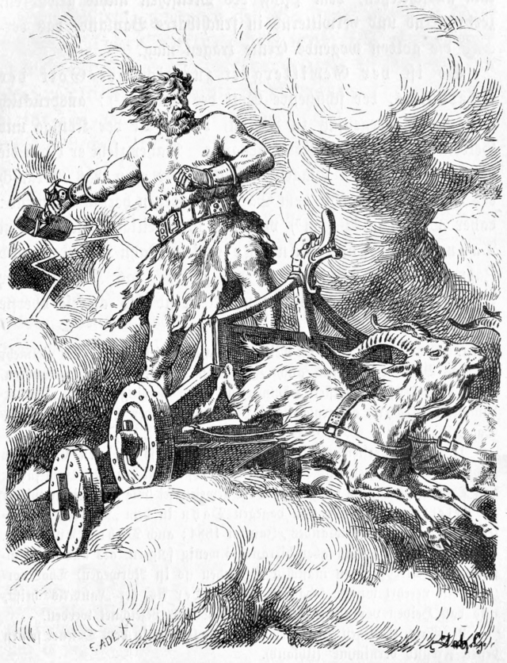
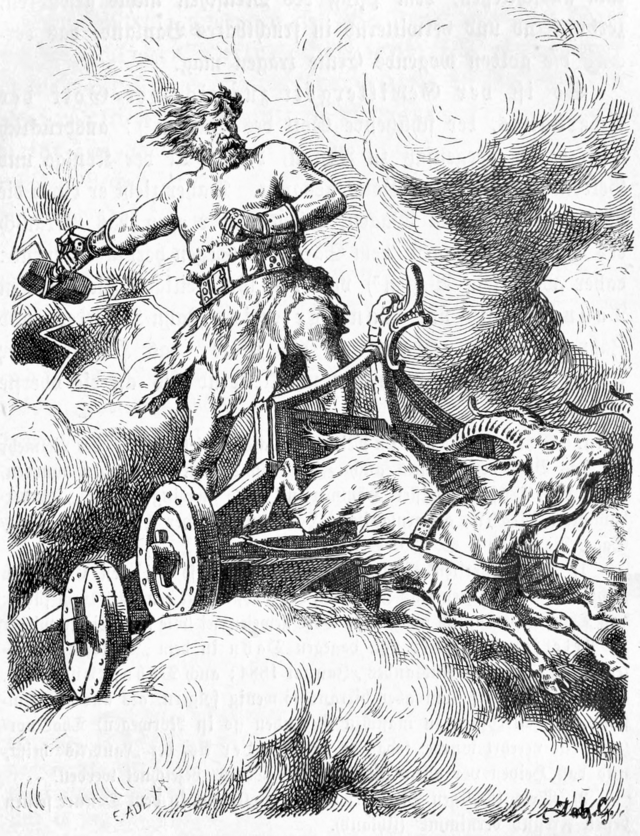
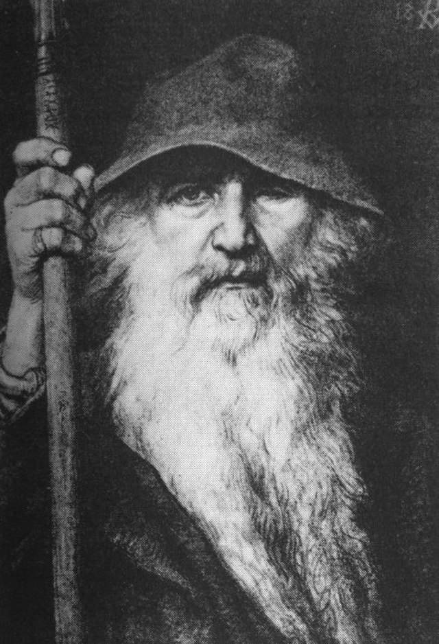

A mitologia nórdica, viking ou germânica, possui mais de um nome por ser uma crença de vários povos, foi desenvolvida nos países escandinavos ou nórdicos, como as atuais Suécia, Noruega, Finlândia, Islândia e Dinamarca. Assim como a maioria das mitologias teve grande influência na configuração cultural desses povos e até hoje inspira filmes, quadrinhos, séries e etc. Constituída de deuses, heróis, anões, gigantes, serpentes, lobos e feiticeiros, as lendas relatam acontecimentos que procuram explicar a origem da humanidade, a vida após a morte, fenômenos da natureza, dentre outros.

Bifrost é o nome dado à ponte de ligação entre o reino dos deuses, Asgard, e o reino dos homens, Midgard.
Árvore mítica e sagrada da mitologia nórdica, considerada a árvore da vida e que sustenta os nove mundos. Ela é o eixo do mundo e suas profundas raízes os conectam.
Valhalla, chamada de “Salão dos Mortos”, corresponde à residência dos deuses, ou seja, o local onde eles eram recebidos após a morte honrada nas batalhas.
Na mitologia nórdica, Ragnarök corresponde ao local do destino final dos deuses. A batalha de Ragnarök aconteceu na região de Midgard, entre as forças do bem e do mal, resultando no fim do mundo e de todas as criaturas - deuses, heróis, gigantes, monstros. Diferente de outras mitologias, nesta os deuses não são imortais e com a batalha de Ragnarök muitos deles morrerão, dando origem a outros novos.
Veja abaixo os principais deuses que compõem a mitologia nórdica:
 

Gangleri começou então seu interrogatório: “Quem é o mais importante, ou mais antigo, de todos os deuses?”
Hárr respondeu: “Ele é chamado Pai de Todos em nossa língua, mas na antiga Asgard ele tinha doze nomes: o primeiro nome é Odin […]”.
Hárr deu a resposta: “Ele vive em todas as épocas e governa todo o seu reino, e dirige todas as coisas, grandes e pequenas.”
Então lhe disse Jafnhárr: “Ele criou os Céus e a terra e o ar, e todas as coisas que há neles.”
Thor tem dois bodes, que são chamados de Tanngnjóstr e Tanngrisnir na qual ele dirige, e os bodes puxam-na, por isso ele é chamado de Öku-Thor. Ele também possui três coisas de grande valor: um é o martelo Mjölnir, que os Gigantes de Gelo e os Gigantes da Montanha conhecem quando é levantado ao alto, e isto é de se admirar, pois feriu muitos crânios entre seus pais ou seus parentes. Ele tem um segundo tesouro valioso, o melhor de todos, o Megingjard, ou o Cinturão de Força, e quando ele aperta-o em sua cintura, então a força divina dentro dele é duplicada. No entanto, uma terceira coisa ele possui, na qual há muita virtude: suas Luvas de Ferro, ou Járnglófar, ele não pode ficar sem elas quando usa o martelo. Mas ninguém é tão sábio a ponto de poder dizer a todos as suas grandes obras, mas posso te dizer tantas histórias dele que as horas seriam gastas antes de tudo o que eu sei fosse dito"
O mundo dos deuses nórdicos foi criado com “partes do corpo” Na mitologia nórdica, existem nove “mundos”, todos conectados pela árvore gigante Yggdrasil, citada em vários poemas antigos e considerada o “eixo do mundo”. Entre os nove estão Midgard, o mundo material dos humanos — localizado no tronco — e Asgard, habitado pelos deuses do clã Aesir e posicionado na parte mais alta da árvore.
Antes de tudo isso existir, não havia nada além de um abismo vazio chamado Ginnungagap. O espaço era ocupado por Niflheim e Muspelheim, reinos do gelo e do fogo, que colidiram um com o outro e formaram Ymir, um ser hermafrodita e a primeira criatura viva do universo. Ymir foi o ancestral de todos os Jotun, raça dos gigantes, e deu origem aos demais seres da mitologia.
Dentro das geleiras do abismo também surgiu Buri, o primeiro deus do grupo dos Aesir. Gerações mais tarde, o deus Odin, que era meio Aesir e meio gigante, nasceu ao lado dos irmãos Vili e Vé, que juntos decidiram criar o “novo mundo”. Após matarem Ymir, eles transformaram cada parte de seu corpo: a pele passou a ser a Terra, seu crânio o céu, os cérebros viraram nuvens e o sangue passou a ser o mar. Ossos e dentes, por sua vez, formaram as rochas de todo o universo.
Odin, pai dos deuses nórdicos e senhor da guerra, era também o deus do conhecimento. Conhecimento e sapiência levam ao poder e por isso Odin tinha fome de sabedoria. Conversava com profetas, reis, filósofos e todos aqueles que lhe pudessem aumentar a sua erudição. Para além disso possuía dois corvos – Hugin, que significa pensamento e Munin, que significa memória – que todos os dias voavam pelo mundo em busca de novidades voltando ao anoitecer ao trono do seu mestre para lhas contarem.
Odin sacrificaria tudo por conhecimento… mataria até, se isso lhe garantisse o alargar de horizontes.
Segundo a mitologia nórdica existe uma árvore colossal (um freixo) que serve de eixo ao mundo, é Yggdrasil. Está localizada no centro do universo. Na parte mais alta, onde se pode tocar o sol e a lua, jaz a cidade dourada (Asgard) que é a Terra dos deuses e Valhala, o local onde os guerreiros vikings eram recebidos após a morte honrosa nas batalhas. Nas frutas de Yggdrasil estão guardadas as respostas às grandes perguntas da humanidade e por isso são guardadas pelas valquírias e apenas os deuses lhes têm acesso. As suas folhas têm o poder da vida podendo ressuscitar e curar qualquer doença. O tronco, Midgard, é o mundo material dos homens e as suas raízes profundas estão situadas em Niflheim, os mundos subterrâneos.
Odin descobriu a existência de um poço do conhecimento, uma fonte de sabedoria, nas raízes de Yggdrasil, local guardado por Mimir. Mas beber daquela água exigia um preço… preço que Odin estava disposto a pagar! Assim, Odin deu um dos seus olhos em troca de um gole de pura gnose.
A troca do olho pela visão…dar o olho para conseguir ver… não existe maior paradoxo! Mas mostra a ânsia de conhecimento que o Deus tinha e representa, como todo o mito, o próprio homem. A sofreguidão de saber que o homem tem, a curiosidade, a vontade de ir mais além, de descobrir, de compreender…
Com o passar dos tempos esta curiosidade nossa característica não estagnou, tomou sim proporções inimagináveis. A ambição e procura desmedida para a conquista do infinito quebra quaisquer limites…
Em sua busca por conhecimento sobre todas as coisas, Odin acreditava que a inteligência valia qualquer preço e às vezes era preciso fazer sacrifícios. Para desvendar as runas nórdicas, em uma ocasião, ele chegou a se enforcar, se esfaquear e passar mais de uma semana sem comer.
Outro exemplo foi sua jornada à fonte de Mímir, o mais sábio dos deuses nórdicos, que obteve seu conhecimento absoluto após beber da fonte da grande sabedoria, nas raízes da árvore Yggdrasil. Em troca de um bom gole, Odin teria que pagar com um de seus olhos, que ele próprio decidiu arrancar.
Em mais uma de suas aventuras, Loki pensou que seria cômico raspar a cabeça de Sif, esposa de Thor, enquanto ela dormia. Após Thor ter expressado sua fúria pela brincadeira, Loki prometeu conseguir novos cabelos com os anões, que deveriam fabricá-los usando apenas ouro.
Para agradar aos deuses, os anões decidiram entregar mais alguns presentes e Loki apostou que eles não seriam capazes de produzir qualquer coisa mais impressionante do que os objetos que já haviam criado — o vencedor da aposta teria a cabeça do perdedor. Para a surpresa de Loki, os novos itens incluíam um navio que poderia ser dobrado até caber no bolso, uma lança que nunca errava o alvo e Mjölnir, o martelo de Thor.
Ao argumentar que os anões poderiam arrancar sua cabeça, mas não o pescoço, ninguém soube decidir onde realmente “terminava” o pescoço e começava a cabeça. Para resolver o impasse, os anões deixaram Loki inconsciente com a ajuda de Thor e costuraram sua boca com um pedaço de couro.
Em resumo, a mitologia nórdica desempenhou e ainda desempenha um papel fundamental na cultura, literatura e identidade dos povos nórdicos, bem como em regiões e culturas que têm sido influenciadas por essa rica tradição. Suas histórias de deuses, heróis e o destino cósmico continuam a ressoar em muitos aspectos da vida moderna.